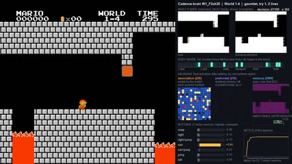
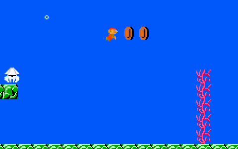
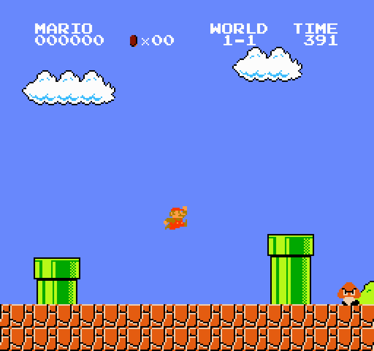
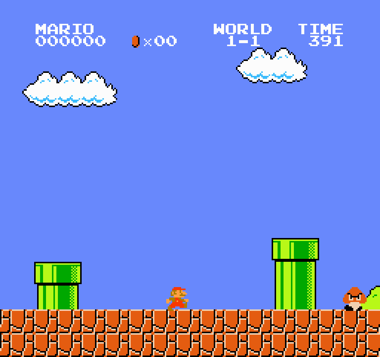

Home / Mario
Super Mario Bros. · solo from the screen
One Cadence brain beat all of World 1 in a single 5-life gauntlet
Brain W1b ("the balanced finisher", trained overnight 10/31) cleared 1-1, 1-2, 1-3 and 1-4 (Bowser) back to back with the same weights, losing three lives on 1-3, then ran out on 2-1, a level it never trained on. On 50 held-out starts per level it clears 1-1 7, 1-2 8, 1-3 9 and 1-4 27 times: every level, none consistently yet. Other brains still do better on single levels (1-1 50/50 with W1_F2ck110, 1-4 50/50). Every button in every clip is the brain's.
W1b's run
- 1-1cleared, first try
- 1-2cleared, first try
- 1-3cleared on the fourth trydeaths at x 747, 1,200, 1,202
- 1-4cleared, first try (Bowser)
- 2-1last two lives lostx 343, 346; never trained on
Held-out clears, out of 50 starts each:
Last updated 2026-11-01 06:36 EST. Older brains trained on Cadence (cadence-net) 0.91.1 and re-scored on 0.91.3: identical answers, identical scores. The 10/31 overnight brains trained on 0.91.3. Cadence is by Pragma Research; this experiment is independent.
Best per level
Solo clears on 50 held-out starts, each level's brain from the scoreboard below. These are four different brains; the one-brain result is W1b above.
One brain, every World 1 level
How it got there (overnight 10/31): the 1-2 brain line (1-2_12n59) practised 1-2 for 3 hours, then 1-3 and 1-4 were added back with lessons from all four levels and coaching on the weak level, picking checkpoints on practice starts only. Checkpoint 20 of that run (W1_F2ck20, about 45 minutes in) was the first whose practice starts flagged all four levels; the 50 held-out starts above were played after it was picked. In the five-life gauntlet W1_F2ck20 lost all five lives on 1-1 (it clears 1-1 only about a third of the time).
One brain, three levels
Its sibling U3ck44 ("the balanced one") also clears all three: 25 / 15 / 37 of 50. Both were tested on 1-2 on 10/31 (74 starts each): 0 clears, both stop around x 900.
Scoreboard
| level | solo clears | brain | status |
|---|---|---|---|
| 1-1 | 50/50 | W1_F2ck110 | perfect on held-out starts, and the same brain clears all four World 1 levels |
| 1-2 | 29/50 | 1-2_12n59 | not yet: up from 8/50 overnight; clears more than half the time |
| 1-3 | 42/50 | one_11_13 | consistent, same weights as 1-1 (best 1-3 checkpoint: 45/50) |
| 1-4 Bowser | 50/50 | U3ck28 | perfect on held-out starts; the same brain also clears 1-1 on 30/50 |
| 2-1 | 0/50 | one_11_13, first sight | never practised: reaches x ~330 (random buttons ~380) |
| 2-2 | 0/50 | one_11_13, first sight | never practised: reaches x ~210 (random buttons ~1,230) |
Solo clears out of 50 held-out starts. A start waits a different number of frames before the first button, which moves the enemies and lifts; none of these 50 were used to train the brain or to pick the checkpoint. "Consistent" = at least 40 of 50. Brains by name: see "Meet the brains". The best single brain across three levels is U3ck83 (15 / 45 / 33 on 1-1 / 1-3 / 1-4).
Meet the brains
Every brain is one Cadence region of 256 neurons reading the screen (coarse grey blocks, this frame and the last) and its own body (speed, ground/air, held buttons). All came from the same line of training (coach labels + DAgger, LEARNING_FIX.md), older ones trained on cadence-net 0.91.1 and re-scored on 0.91.3, W1 and F30 trained on 0.91.3. Scores: solo clears of 50 held-out starts.
Beat all of World 1 in one five-life gauntlet; every level at least 7/50.
all four levels, run p4/F2 checkpoint 35 (0.91.3)
Highest four-level total (92/200); perfect 1-1.
all four levels, run p4/F2 checkpoint 110 (0.91.3)
Every level at least 7/50, 1-3 15/50.
all four levels, run p4/F2 checkpoint 87 (0.91.3)
All four levels, 76/200.
all four levels, run p4/F2 checkpoint 40 (0.91.3)
All four levels, consistent on 1-1.
all four levels, run p4/F2 checkpoint 39 (0.91.3)
First brain to clear every World 1 level.
all four levels, run p4/F2 checkpoint 20 (0.91.3)
First brain to clear 1-2 and 1-4 together.
all four levels, run p4/F checkpoint 30 (0.91.3)
Best three-level total (93/150), best 1-3.
1-1 + 1-3 + 1-4, run st_U3 checkpoint 83
First brain to clear all three practised levels.
1-1 + 1-3 + 1-4, st_U3 checkpoint 44
Consistent (40+) on two levels at once.
1-1 + 1-3, st_13d checkpoint 13
Best 1-1 of its generation (W1_F2ck110 later got 50/50).
1-1 + 1-3 + 1-4, st_U3 checkpoint 3
Perfect 1-4.
1-1 + 1-3 + 1-4, st_U3 checkpoint 28
Best 1-2 (29/50). It was the only brain that cleared 1-2 until the World 1 finishers (W1_F2*).
1-2 (90%) + 1-1, st_12n checkpoint 59
All brains as one table (easier to compare on a big screen)
| brain | nickname | 1-1 | 1-2 | 1-3 | 1-4 | trained on / checkpoint | what's special |
|---|---|---|---|---|---|---|---|
| W1_F2ck35 (W1b) | the balanced finisher | 7 | 8 | 9 | 27 | all four levels, run p4/F2 checkpoint 35 (0.91.3) | beat all of World 1 in one five-life gauntlet; every level at least 7/50 |
| W1_F2ck110 | the finisher with a perfect 1-1 | 50 | 11 | 6 | 25 | all four levels, run p4/F2 checkpoint 110 (0.91.3) | highest four-level total (92/200); perfect 1-1 |
| W1_F2ck87 | the finisher with the best 1-3 | 22 | 7 | 15 | 27 | all four levels, run p4/F2 checkpoint 87 (0.91.3) | every level at least 7/50, 1-3 15/50 |
| W1_F2ck40 | the finisher, best total | 29 | 8 | 5 | 34 | all four levels, run p4/F2 checkpoint 40 (0.91.3) | all four levels, 76/200 |
| W1_F2ck39 | the finisher with a strong 1-1 | 43 | 1 | 4 | 36 | all four levels, run p4/F2 checkpoint 39 (0.91.3) | all four levels, consistent on 1-1 |
| W1_F2ck20 | the World 1 finisher | 16 | 10 | 1 | 34 | all four levels, run p4/F2 checkpoint 20 (0.91.3) | first brain to clear every World 1 level |
| F30 | the 1-2 + Bowser one | 42 | 9 | 0 | 34 | all four levels, run p4/F checkpoint 30 (0.91.3) | first brain to clear 1-2 and 1-4 together |
| U3ck83 | the three-level champion | 15 | 0 | 45 | 33 | 1-1 + 1-3 + 1-4, run st_U3 checkpoint 83 | best three-level total (93/150), best 1-3 |
| U3ck44 | the balanced one | 25 | 0 | 15 | 37 | 1-1 + 1-3 + 1-4, st_U3 checkpoint 44 | first brain to clear all three practised levels |
| one_11_13 | the two-level all-rounder | 40 | 0 | 42 | 0 | 1-1 + 1-3, st_13d checkpoint 13 | consistent (40+) on two levels at once |
| 1-1_U3ck3 | the 1-1 specialist | 46 | 0 | 4 | 8 | 1-1 + 1-3 + 1-4, st_U3 checkpoint 3 | best 1-1 of its generation (W1_F2ck110 later got 50/50) |
| U3ck28 | the Bowser specialist | 30 | 0 | 11 | 50 | 1-1 + 1-3 + 1-4, st_U3 checkpoint 28 | perfect 1-4 |
| 1-2_12n59 | the underground one | 14 | 29 | 0 | 0 | 1-2 (90%) + 1-1, st_12n checkpoint 59 | best 1-2 (29/50); the only 1-2 brain until the W1_F2 finishers |
Gauntlet
Real start of 1-1, five lives. A flag moves on to the next level (1-2, 1-3, 1-4, 2-1 ...); a death restarts the current level; no learning between lives; game over on the fifth death. Retries start a few frames later (the emulator is deterministic, so an identical restart would replay the identical death). "One brain" = the same weights the whole way. Each level starts with small Mario.
| time | brain | cleared | deaths (level: x) | lives left | clip |
|---|---|---|---|---|---|
| 11/01 05:11 EST | W1_F2ck110 (one brain; held-out 50 / 11 / 6 / 25) | 1-1 | 1-2: 872, 883, 1,320, 468, 1,321 | 0 | clip |
| 11/01 04:42 EST | W1_F2ck87 (one brain; held-out 22 / 7 / 15 / 27) | 1-1 | 1-1: 2,471, 3,154 (stuck); 1-2: 1,744, 1,646, 1,742 | 0 | clip |
| 11/01 03:02 EST | W1_F2ck40 (one brain; held-out 29 / 8 / 5 / 34) | 1-1 | 1-1: 1,153, 1,153; 1-2: 851, 1,325, 1,321 | 0 | clip |
| 11/01 02:30 EST | W1b = W1_F2ck35, the balanced finisher (one brain) | 1-1, 1-2, 1-3, 1-4 | 1-3: 747, 1,200, 1,202; 2-1: 343, 346 | 0 | clip, with brain |
| 11/01 02:30 EST | W1_F2ck39 (one brain) | 1-1 | 1-1: 1,816, 2,469; 1-2: 955, 882, 679 | 0 | clip |
| 11/01 01:51 EST | W1_F2ck20, the World 1 finisher (one brain) | none | 1-1: 2,850, 2,759, 2,754, 1,796, 2,025 | 0 | clip |
| 11/01 01:02 EST | F30 (one brain; clears 1-1, 1-2, 1-4 on held-out starts) | 1-1, 1-2 | 1-1: 1,790; 1-2: 1,744, 851; 1-3: 427, 427 | 0 | clip |
| 11/01 00:51 | death-clinic brain (phase 2, checkpoint 107) (one brain) | none | 1-1: 2,471, 1,674, 1,674, 695, 698 | 0 | clip |
| 10/31 22:51 | 1-2 practice brain (phase 2, plain coaching, checkpoint 35) (one brain) | 1-1, 1-2 | 1-1: 1,790, 1,789; 1-2: 1,596; 1-3: 656, 659 | 0 | clip |
| 10/31 22:50 | 1-2_12n59, the underground one (one brain) | 1-1, 1-2 | 1-2: 1,595, 852, 1,336; 1-3: 700, 700 | 0 | clip |
| 10/31 21:23 | RAM-map brain, end of phase 1 RAM / cheat | 1-1 | 1-2: 1,651, 291 (stuck), 676, 673, 851 | 0 | clip |
| 10/31 19:20 | fresh brain, normal senses (1 h 30 min old, phase 1 control) | none | 1-1: 1,126 x5 | 0 | clip |
| 10/31 19:20 | fresh brain reading a RAM map RAM / cheat (1 h 30 min old) | none | 1-1: 2,850 (stuck), 1,820, 1,820, 2,850 (stuck), 1,820 | 0 | clip |
| 10/31 17:48 | relay of specialists: 1-1_U3ck3, 1-2_12n59, U3ck83 (1-3), U3ck28 (1-4), U3ck83 (2-1 on) | 1-1, 1-2, 1-3, 1-4 | 1-2: 1,595, 852, 1,336; 2-1: 531 (stuck), 723 (stuck) | 0 | clip |
| 10/31 17:48 | U3ck44 (one brain) | 1-1 | 1-1: 2,762, 1,784; 1-2: 323, 354, 354 (all stuck) | 0 | clip |
| 10/31 17:11 | U3ck83 (one brain) | 1-1 | 1-2: 322, 470, 322, 893, 354 | 0 | clip |
Best single brain: W1b, all four World 1 levels in one run (11/01 02:30). Before that night the best single brain stopped at 1-2.
Tests from the 10/31 night
Would perfect "what is where" help? RAM / cheat
A ceiling test, labeled as a cheat: a fresh brain read a map built from the game's memory (13 x 16 tiles around Mario: solid, enemy, pit, power-up) plus its body sense, no screen. A matched fresh brain read the normal screen. Same coach, same recipe, same 3.5 hours, same share of the PC.
| fresh brain, 3.5 h | 1-1 | 1-2 | 1-3 | 1-4 | 2-1 first sight |
|---|---|---|---|---|---|
| RAM map cheat, best 1-4 checkpoint | 0 | 0 | 0 | 49/50 | x 1,021* |
| RAM map cheat, best joint checkpoint | 10/50 | 0 | 0 | 36/50 | x 429 |
| normal screen (control), best checkpoint | 2/50 | 0 | 0 | 0 | x 340-530 |
Result: with a perfect map it learns World 1 levels far faster (5 more hours: 1-1 50/50, 1-4 43/50), but it never cracked 1-2 or carry over to World 2 in 3.5 h, which were the pre-registered win conditions. So by its own rules the test lost. *Not pre-registered and the best of five brains scored, so treat it as a lead, not a result. This brain never plays on this page's scoreboard; it can't see the screen.
A "death clinic" for 1-2
When a solo run dies, rewind to 1, 2 and 4 seconds before the death, let the brain try again from there with the coach labeling, and keep its own moves when it gets past the spot where it died. Compared against plain coaching with the same coaching budget, both starting from the 1-2 brain (29/50).
| 3 hours of 1-2 practice | 1-2 clears | wrong on must-get-right moments, along its own path |
|---|---|---|
| start (1-2_12n59) | 29/50 | 6.7% |
| death clinic | 18/50 | 16.0% |
| plain coaching | 17/50 | 6.5% |
Result: the clinic worked mechanically (about half its retries got past the old death spot) but didn't help. Neither arm beat the starting brain in 3 hours. One run each, so a small effect could hide in the noise; a big one would have shown.
Latest
- Night over, all training stopped. One brain clears every World 1 level (best total: W1_F2ck110, 50 / 11 / 6 / 25 of 50), and one (W1b) beat World 1 in a single five-life gauntlet. Still not consistent on 1-2 and 1-3, and World 2 at first sight is unchanged (no clears). The RAM-map brain had 5 more hours and still never cleared 1-2.
- Another all-four brain from the same run: W1_F2ck110 clears 1-1 on all 50 held-out starts, plus 1-2 11, 1-3 6, 1-4 25. Eight checkpoints of that run now clear every World 1 level on held-out starts.
- Milestone: one brain (W1b) beats all of World 1 in one five-life gauntlet run: 1-1, 1-2, 1-4 first try, 1-3 on the fourth. Three more checkpoints of the same run also clear all four levels on held-out starts.
- Milestone: one brain (W1_F2ck20) clears all four World 1 levels with the same weights on held-out starts: 1-1 16/50, 1-2 10/50, 1-3 1/50, 1-4 34/50. Clips above. Not consistent on 1-3 or 1-2 yet.
Older entries (10/29 to 11/01 01:15)
- Death clinic for 1-2 (practice from just before each death): no gain over plain coaching, and neither beat the 29/50 starting brain in 3 hours. Now trying to grow one brain that clears all four World 1 levels.
- New brain F30: 1-1 42/50, 1-2 9/50 and 1-4 34/50 with the same weights, the first brain to clear both 1-2 and 1-4. 1-3 is still missing; training continues.
- Gauntlet: one brain (1-2_12n59) clears 1-1 and 1-2 in a single five-life run, the furthest a single brain has gone, then loses its last two lives on 1-3.
- RAM-map ceiling test cheat: a fresh brain with a perfect "what is where" map learns 1-4 to 49/50 in 3.5 h, where the same fresh brain on the screen gets almost nothing. But no 1-2 and no World 2, so it misses its own bar. Next: "death clinic" on 1-2 (practice the exact spots where it dies).
- Gauntlet: a relay of specialists (one brain per level) clears all four World 1 levels in one five-life run (1-2 on the fourth try), then dies on 2-1. Single brains stop at 1-2.
- Re-scored every brain on Cadence 0.91.3: identical. Tested the two three-level brains on 1-2: 0 clears in 74 starts each, so "every World 1 level" is not claimed. New: brain roster and a 5-life gauntlet (first one: U3ck83 clears 1-1, then loses all five lives on 1-2).
- First try at World 2 with no coach and no new learning: 0 clears for all five best brains. 2-1: furthest x 723 (stuck at the first tall pipe), most die within 2 seconds. 2-2 (underwater, never seen water): furthest x 514, mostly stops pressing buttons. World 1 skills don't transfer yet. Clips: 2-1, 2-2.
- 1-2 up again: 29/50 held-out starts (1-2_12n59).
- 1-2 moves: 23/50 held-out starts (was 8/50), after testing many more checkpoints between coaching rounds.
- New best on 1-3: 45/50 (U3ck83). That checkpoint also clears 1-4 33/50 and 1-1 15/50.
- First checkpoint that clears all three practised levels at least sometimes (U3ck44): 1-1 25/50, 1-3 15/50, 1-4 37/50 (not consistent yet).
- 1-4 on 50 of 50 held-out starts (checkpoint D, now named U3ck28, which also clears 1-1 on 30/50 and 1-3 on 11/50).
- 1-4 goes consistent: 42/50 held-out starts, Bowser beaten (checkpoint C, 1-4 only).
- New best on 1-1 alone: 46/50 held-out starts (a checkpoint that does not hold 1-3).
- One brain (A, now named one_11_13) holds two levels: 1-1 40/50 and 1-3 42/50.
- 1-4 beaten solo, Bowser included, on 38/50 held-out starts (checkpoint B, joint_11_14_ck10).
- Correction: a 19:31 claim that a brain cleared 1-3 on all 17 practice starts rested on starts of one frame phase. Fixed the test; brain A is measured the fixed way.
- 1-1 on 44/50 held-out starts (joint_11_13_ck8).
- 1-2 parked after ~5 hours: best 8/50.
- First 1-1 brain to clear 10 of 10 test starts (38/50 on the wider test).
- First ever solo clear of 1-1 by a Cadence brain.
Clips
Every button in every clip is the brain's.
How it learned
- It sees the screen and feels its body. Input: the screen as coarse grey blocks (this frame and the last), plus what Mario's body knows: speed, on the ground or in the air, and which buttons the thumb is holding. No enemy positions from the game's memory.
- First it was blind to its own thumb. In Mario a jump starts on the press of A. Holding A does nothing. The early brain couldn't feel held buttons, so the coach's advice for the same screen flipped between "let go" and "press", and it froze against pipes. Feeling the held buttons fixed that, and the first solo clear of 1-1 came the same night.
- Coach labels, then its own mistakes (DAgger). A look-ahead coach tries the next second of buttons on a copy of the game and writes down the best button for each screen. The brain plays alone; the coach labels the screens the brain actually reached, especially just before it died. The coach never takes the controls in any test.
- Fragility, and the fix that worked. Its fit to the coach's labels barely moves, but its solo results swing from 10/10 to 2/10 between small training steps: a level is a chain of dozens of must-get-right moments. Weight averaging, voting, smaller steps and longer training didn't steady it. What worked: save a checkpoint every few minutes, test each one alone on fixed practice starts, keep the best, and check it on starts it never saw.
Honest caveats
- One brain for everything, but not consistently. W1b clears all four World 1 levels, but 7-27 times in 50, not 40+. one_11_13 holds 1-1 and 1-3 consistently; U3ck83 clears three levels but only 1-3 consistently. The best 1-4 checkpoint (U3ck28, 50/50) clears 1-1 only 30/50. The best all-three checkpoints so far: 1-1 25/50, 1-3 15/50, 1-4 37/50 (U3ck44), or 1-1 15/50, 1-3 45/50, 1-4 33/50 (U3ck83).
- 1-2 is not cleared reliably. Best 29/50. On 1-2 the brain fits only about 85% of the coach's labels, and even a standard neural net predicts only about 85% of them on screens it hasn't seen. Ruled out: the coach, sharper eyes, step size, more training, a bigger brain.
- Held-out means held-out starts, not new levels. Levels it never practised (2-1, 2-2) go nowhere, even for the brains that clear all of World 1: the skill doesn't transfer yet.
- This is not "Cadence beats Super Mario Bros." It's World 1, with a coach's labels as the teacher. The coach itself can't clear 2-1 yet, so the brain can't be taught it.
- Numbers on this page are from the run logs, and earlier claims that didn't hold are corrected in the Latest log. Notebooks, dead ends included: CONCEPTS.md (the 10/31 night: RAM test, death clinic, the all-four brains, every gauntlet) and LEARNING_FIX.md (everything before).
More Mario

Brain scope
Scrub through a solo run and watch the brain's real neuron activity, or poke it to see what part of the screen each move depended on.

Level by level
The in-order run, first-sight tests, per-level tables and more clips.

The first 1-1 run
10/28-29: the older brain's replay, learning curve and rescued runs.

Watch the first run
The same older run as plain video: alone, and with coach rescues.